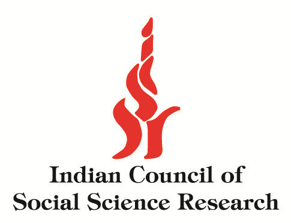
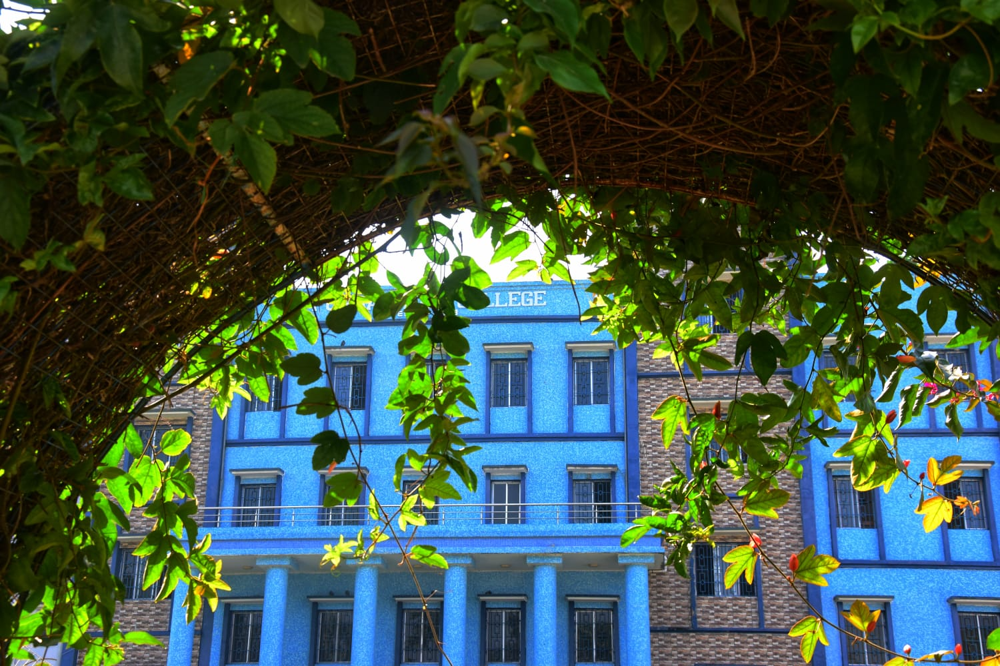
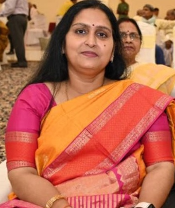
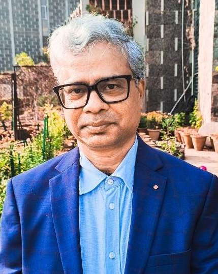
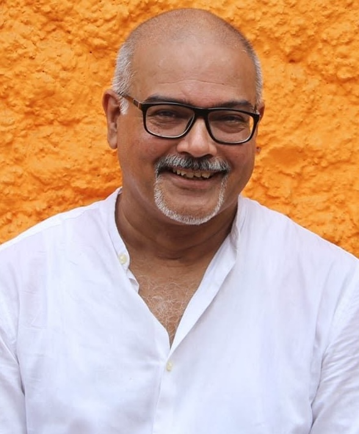
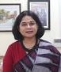
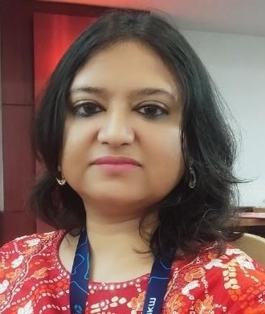
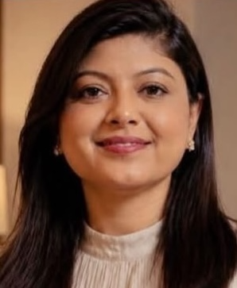
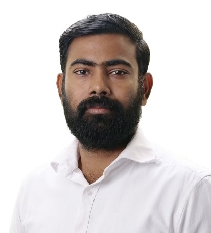

Gender is not merely a biological category, but a discursive construct shaped by power, knowledge and representation. Foucault highlights discourse as a mechanism through which power regulates truth and normativity, while Judith Butler emphasizes the performative production of gender through repeated social practices.
ICSSR Sponsored
Two-day National Conference
Two-day National Conference

DECEMBER 01–02, 2026 · HYBRID MODE
Gender Discourses
and Viksit Bharat
Intersections of Gender, Culture, and the Politics of Representation
A national academic forum bringing together researchers, academics and scholars from diverse disciplines to critically examine changing meanings, representations and negotiations of gender in an inclusive and equitable India.
CONFERENCE COUNTDOWN
--Days
--Hours
--Minutes
--Seconds
Abstract submission deadline
November 8, 2026 View all key dates →Dec 01–02, 2026Conference dates
Hybrid ModeOnline + in-person
₹200–₹500Registration fees
250–300 wordsAbstract length
ABOUT THE COLLEGE
Nurturing knowledge,
shaping a better future.
Nestled in the heart of the locality, Purbasthali College was established with a noble aspiration—to create a vibrant and enriching centre of learning where young minds could flourish, dreams could take shape, and education could become a pathway to a better and more meaningful future.
As the only degree college in this area, the institution has assumed a significant role in widening access to higher education and in serving the educational aspirations of generations of students. The College cherishes an atmosphere where knowledge, creativity, discipline, and human values grow together.
With a commitment to inclusive and transformative education, the College continues to illuminate minds, nurture dreams, and inspire young people to build a brighter future.

CONCEPT NOTE
Gender, discourse, representation
and the vision of Viksit Bharat.
Spivak’s critique of the gender discourse reveals the intersections of caste, class, race, color, and colonial power that function together to render the third world women invisible in dominant narratives. Intersectionality thus becomes essential to understanding diverse gendered experiences beyond homogenizing categories.
The vision of ‘Viksit Bharat’, centred on an empowered, inclusive, self-reliant, and sustainable India, foregrounds gender equality and empowerment as crucial dimensions of national development. The conference interrogates the ways in which gender discourse is inextricably linked with the narrative of ‘Viksit Bharat’ and how contemporary India articulates equality, empowerment, development, and the identity of women and gender minorities through literary, cultural, political, visual, and policy documents.
INVITED SPEAKERS
Voices shaping the conversation
Distinguished scholars and practitioners from leading institutions.

Prof. Rajni Singh
Professor, IIT (ISM), Dhanbad

Prof. Ujjwal Jana
Professor, University of Delhi

Prof. Niladri Ranjan Chatterjee
Professor, University of Kalyani

Dr. Priyanka Tripathi
Associate Professor, IIT Patna

Dr. Sutanuka Banerjee
Assistant Professor, NIT Durgapur

Dr. Tanima Kumari
Assistant Professor, L. N. M. U.
Fellow, IIAS, Shimla

Dr. Nanda Gopal Biswas
Programme Officer, ICPR, New Delhi
CALL FOR PAPERS
Indicative sub-themes
The following sub-themes are merely indicative and not limited to.
01Gender, nation, colonial legacies, and Postcolonial interventions
02Representation of gender in literary, textual, media, folk, cultural, and visual arts
03Intersectionality, caste, class, marginalised gender identities, and developmental narratives
04Feminism, queer aesthetics, identity, empowerment, and counter discourse
05Globalization, liberalization, technological mediation, and gender
06Gender, sustainable development goals (SDGs), and ‘Viksit Bharat’
07Gender discourse, pedagogy, and curriculum
08Gender, policy, development, inclusion, and ‘Viksit Bharat’
09Digital Bharat, gender divide, artificial intelligence, technology, and digital representation
10Sexual violence, law, development, and ‘Viksit Bharat’
11Gender, politics, governance, democracy, and decision making
12Gender, work, labour, economic inequality, and entrepreneurship
SUBMISSION GUIDELINES
Prepare your abstract
for scholarly review.
- Papers must be original and unpublished and should be aligned with the broad theme of the conference.
- Abstracts of 250–300 words and keywords should be submitted along with the title, author(s) name, designation, affiliation, postal address, email address and contact number.
- Selected abstracts will be considered for paper presentation at the conference.
- The abstract and the full-length paper should be typed in A4 size with Times New Roman, Font 12 size, 1.5 spacing in MS Word format.
- Papers should be written in English and follow either MLA 9th or APA 7th edition.
- All papers will be rigorously screened for plagiarism and AI-detection protocols to ensure academic integrity.
PUBLICATION
Selected high-quality papers
Selected high-quality papers will be published in Kaleidoscope: An Interdisciplinary Journal of Humanities and Social Sciences; or as chapters in an edited book / conference proceedings with a reputed national or international publisher.
★ Best Paper Presenter Award
An award for the Best Paper Presenter will be conferred during the conference. Eligibility is strictly restricted to in-person (onsite/offline) presenters.
REGISTRATION
Participate in the conference
Registration Fees
Students₹200
Research Scholars / SACT₹300
Faculty / working professionals₹500
Fees include seminar kit, certificate, breakfast and lunch on both days of the seminar.
How to register
- Submit your abstract through the registration form or QR code on or before October 30, 2026.
- After notification of acceptance, pay the requisite registration fee by November 8, 2026.
- Submit the full paper as an email attachment to english.purbasthalicollege@gmail.com by November 28, 2026.
Participants must select their mode of presentation at registration. Subsequent requests to change the mode will not be entertained.
Need-based accommodation
Limited need-based accommodation may be available on a shared basis for outstation delegates. Requests must be submitted and confirmed during registration.
Request accommodation →PAYMENT MODE
Online bank transfer
Payment can be made through online bank transfer. Please retain your transaction details for registration verification.
ACCOUNT NUMBER342505000602
NAMEPurbasthali College
IFSCICIC0003425
BANKICICI Bank · Katwa
IMPORTANT DATES
Mark your calendar
Nov 8, 2026Abstract Submission Deadline
NOV 12, 2026Notification of Acceptance
NOV 15, 2026Registration Deadline
NOV 28, 2026Full Paper Submission
DEC 01–02, 2026Conference Dates
HOW TO REACH
Purbasthali College
By Rail
Purbasthali College is conveniently accessible from Purbasthali Railway Station, which is well connected to Sealdah/Howrah, Katwa, Bandel and other major stations. Local transport is available from the station to the College.
By Road
The College is well connected by road and is located in close proximity to State Highway 6 (SH 6). It is easily accessible from Kalna, Katwa, Bardhaman, Purbasthali and surrounding areas by bus, car, auto-rickshaw and other local transport.
By Air
The nearest major airport is Netaji Subhas Chandra Bose International Airport, Kolkata. From the airport, Purbasthali College can be reached by road or by a combination of rail and road transport.
VENUE
Swami Vivekananda Auditorium
Purbasthali College
Parulia, Purba Bardhaman
Pin: 713513, West Bengal
COMMITTEES
Conference leadership
CHIEF PATRON
Shri Gopal Chattopadhyay
President, Governing Body, Purbasthali College
PATRON
Dr. Bibhas Chandra Saha
Principal, Purbasthali College
CONVENER
Dr. Soumya Mohan Ghosh
Assistant Professor and Head, Department of English and Co-ordinator, IQAC
ORGANIZING COMMITTEE
Dr. Sukla Bhattacharyya · Mr. Anupam Das · Dr. Suchandra Neogi · Dr. Lipika Ghoshal · Dr. Ashes Datta · Mr. Biswanath Bhattacharyya · Mr. Dilip Roy · Mr. Md. Asadul Haque
CONTACT
Be part of the conversation.
For abstract submission, registration, full-paper submission and conference queries.
english.purbasthalicollege@gmail.comParulia, Purba Bardhaman, Pin: 713513, West Bengal